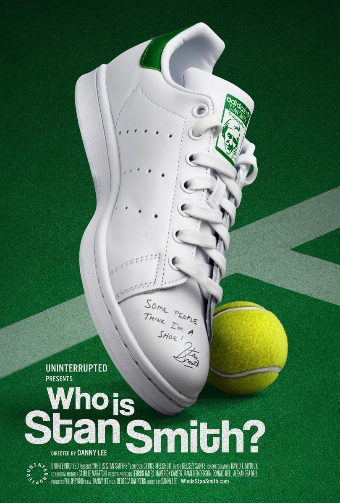
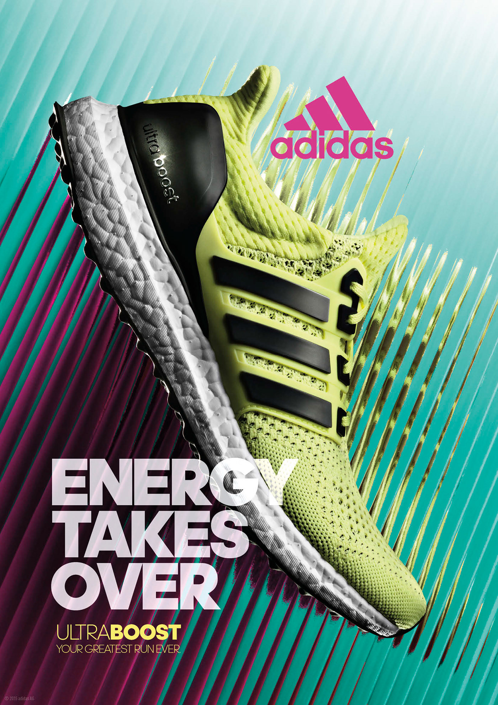
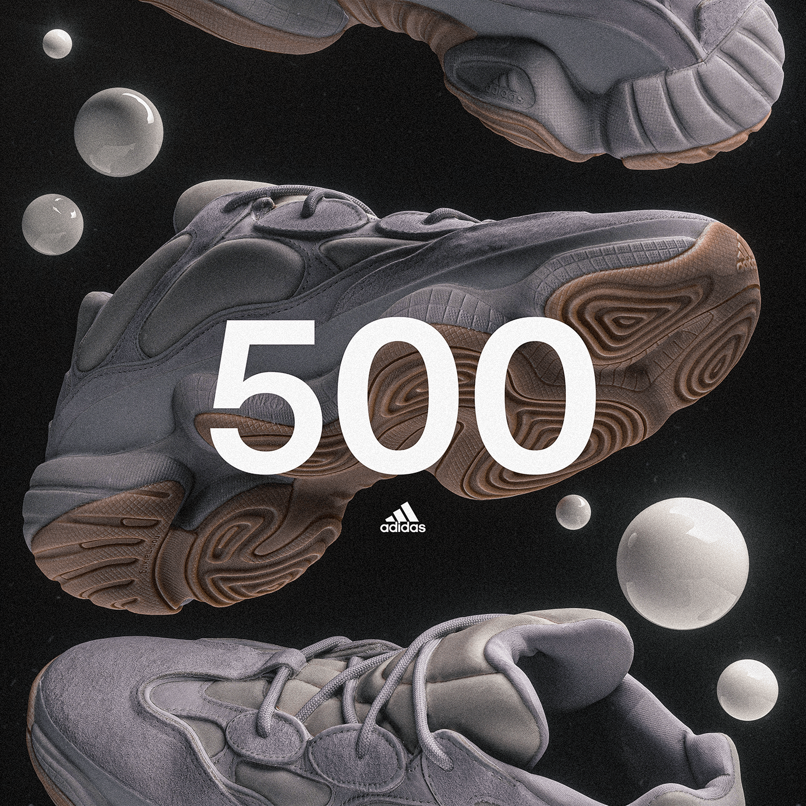

Обувки
Superstar
- Първата баскетболна обувка с гумен „shell toe“ за защита на пръстите.
- Превзета от хип-хоп групата Run-D.M.C., която я носи без връзки.
- Превръща се от спортна обувка в символ на улична идентичност.

Stan Smith
- Първоначално тенис обувка, без ясно изразен спортен дизайн.
- Става икона чрез минимализъм, не чрез технологии.
- Един от най-продаваните модели в историята на Adidas.

Ultraboost
- Представя Boost пяната, разработена чрез химическа експертиза, не традиционна гума.
- Първоначално е бегаческа обувка, по-късно възприета като лайфстайл модел.
- Символ на сливането между комфорт и градска мода.

Yeezy
- Проект, който превръща спортна марка в културен феномен.
- Ограниченото предлагане създава изкуствен недостиг и огромен вторичен пазар.
- Показва как музикант може да влияе на модата повече от дизайнер.
